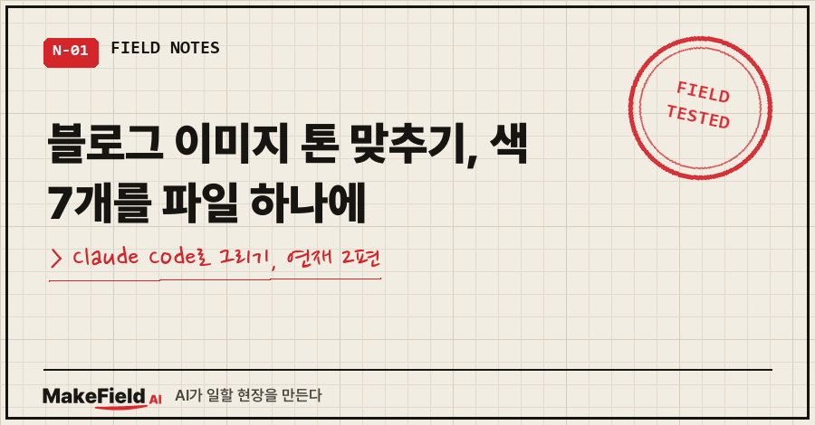
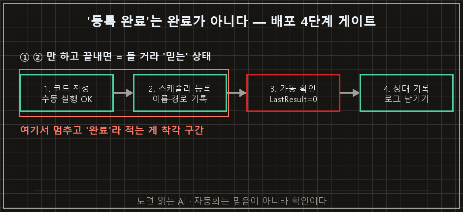
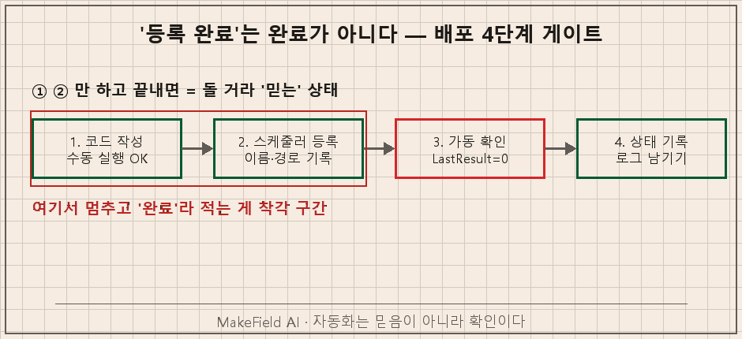
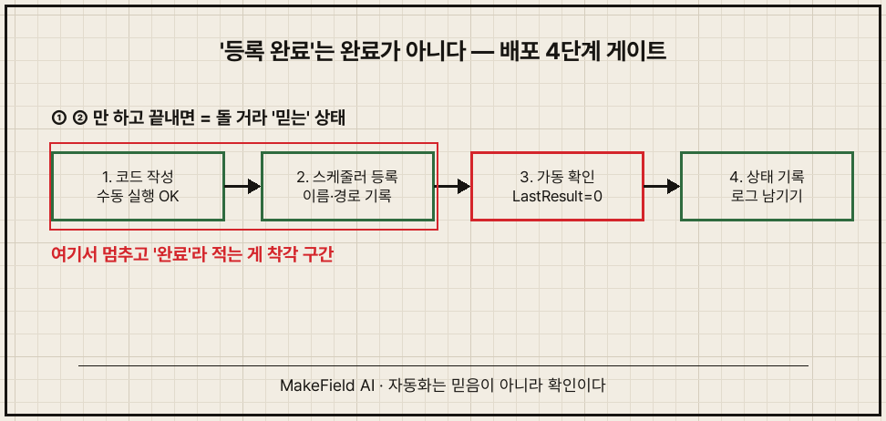
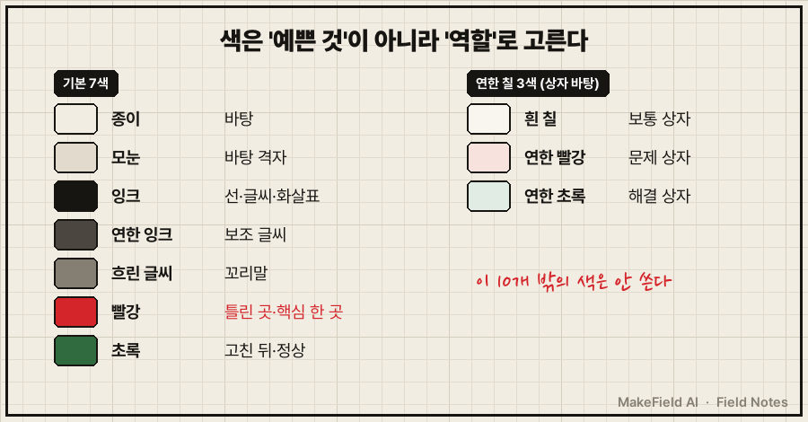

"색상 너무 아무거나 쓴 거 아닌가?"
10월 5일, AI가 바꿔 놓은 블로그 그림들을 보고 제가 친 말이에요.
그날 아침 지난 글 그림을 새 톤으로 싹 바꿔 보자고 시켰는데, 결과물에 빨강·초록·갈색·주황·파랑·청록이 의미 없이 섞여 있었거든요.
결론부터 말씀드리면 블로그 이미지 톤 맞추기는 "색을 정해 둔 파일 하나"로 해결됐어요. 색을 예쁜 것 기준이 아니라 역할(바탕·글씨·문제·해결) 기준으로 7개만 정해 두고, 모든 그림이 그 파일을 불러서 그리게 했습니다. 그 뒤로 지난 글 125편의 그림 495장을 같은 톤으로 다시 그렸어요.
1편에서 "그림 툴 대신 Claude Code에게 파이썬 코드로 그리게 한다"는 얘기를 했죠. 이번 편은 그 그림들이 왜 따로 놀았고, 어떻게 한 톤이 됐는지예요.
1. 그림마다 톤이 따로 노는 이유가 뭔가요?
그림을 그릴 때마다 AI가 색을 새로 고르기 때문이에요. 매번 "보기 좋은 색"을 고르는데, 그 기준이 그림마다 조금씩 달라요.
한 장씩 보면 다 괜찮아요. 그런데 글 열 개를 이어서 보면 어떤 글은 파랑, 어떤 글은 주황.. 남의 블로그 그림을 모아 놓은 것처럼 보입니다.
제 블로그는 10월 초까지 남색 바탕의 설계도 느낌이었어요.

10월 4일에 블로그 전체 분위기를 "크림색 종이에 잉크와 빨간 펜"으로 바꾸기로 했어요. 그래서 그날부터 새로 만드는 그림은 새 톤으로 그렸고, 다음 날 아침에 지난 글 그림도 바꿔 보자고 한 게 사고의 시작이었습니다.
2. 이미 만든 그림 색을 바꾸다 망한 과정
처음엔 완성된 PNG의 픽셀 색을 바꾸는 방식으로 했다가 실패했어요. 남색은 종이색으로, 흰 글씨는 검은 글씨로, 나머지 색은 비슷한 새 색으로 바꾼 거죠.
결과가 이거예요.

언뜻 보면 그럴듯한데 하나씩 보면 문제가 세 가지였어요.
- 원래 노랑이던 3번 상자가 갈색이 됨. 갈색이 무슨 뜻인지 아무도 모름
- 옛 그림의 모눈 위에 새 모눈이 겹쳐서 바탕이 지저분함
- 회색 글씨가 크림 바탕 위에서 흐려짐
원인은 "색의 뜻"을 모르고 "색의 값"만 바꾼 데 있었어요. 노랑이 원래 "주의" 뜻이었는지 그냥 장식이었는지 픽셀은 모르거든요.
그래서 방법을 바꿨어요. 완성된 그림이 아니라, 그림을 그리는 코드를 다시 돌리면서 색을 바꾸는 쪽으로요. 코드가 "여기 빨간 테두리"라고 그리는 순간에 그 색이 문제 표시인지, 해결 표시인지, 그냥 글씨인지 역할을 보고 새 팔레트의 색으로 바꿔 그리게 했습니다. 글꼴도 그때 맑은 고딕에서 Pretendard로 같이 바꿨고요.

1편에서 "코드가 원본"이라고 했던 게 이 장면이에요. 그림만 남아 있었다면 픽셀을 만지는 것 말고는 방법이 없었을 거예요.
3. 색 규칙 파일은 어떻게 생겼나요?
색 이름과 값, 그리고 자주 쓰는 모양(상자·화살표·손글씨 메모)을 함수로 모아 둔 파이썬 파일 한 개예요. 모든 그림 코드가 맨 위에서 이 파일을 불러옵니다.
실제 파일에서 색 부분만 옮기면 이렇습니다.
# 바탕
PAPER = (242, 237, 227) # 크림 종이
GRID = (226, 219, 205) # 모눈
# 글씨·선
INK = (23, 21, 18) # 잉크 (기본)
INK2 = (75, 70, 63) # 보조 글씨
MUTED = (133, 126, 115) # 꼬리말
# 의미
RED = (212, 37, 43) # 틀린 곳·핵심 한 곳에만
GREEN = (47, 107, 63) # 고친 뒤·정상
그리고 그림 하나는 이렇게 그려요. 색 숫자가 코드에 한 번도 안 나오는 게 포인트입니다.
from field_style import *
img, d = canvas(900, 430) # 크림 종이 + 모눈
heading(d, "규칙을 늘리지 말고, 순서를 바꾼다", 40)
box(d, 70, 140, 200, 60, "기억으로 판단", RED) # 문제 = 빨강
arrow(d, 280, 170, 360) # 기본 = 잉크
pen(d, "여기서 틀렸다", 380, 220) # 빨간 펜 메모
footer(d, img)
img.save("02_diagram.png")규칙은 세 줄로 정해 뒀어요.
- 빨강은 틀린 곳·핵심 한 곳에만
- 손글씨 메모는 그림당 1~2개
- 이 10색 밖의 색은 새로 만들지 않기
이걸 AI 지침 파일에 적어 두고, 그림 그릴 땐 이 파일을 불러서 쓰라고 해 뒀어요. 그 뒤로는 제가 색 얘기를 따로 안 해도 톤이 맞게 나옵니다.
4. 내 블로그용 색 규칙 파일 만들기
처음부터 만든다면 이렇게 시키면 돼요.
블로그 그림용 style.py를 만들어 줘.
바탕 1, 글씨 2, 강조 1(문제), 보조 1(해결) 이렇게 색을 역할로 정하고,
상자·화살표·제목 함수를 넣어 줘.
앞으로 블로그 그림은 전부 이 파일을 import해서 그려.그다음 그림 3장 정도를 이 파일로 그려 보고, 마음에 안 드는 색만 파일에서 고치면 돼요. 그 한 곳만 바꾸고 3장을 다시 실행하면 전부 같이 바뀝니다.
하나 더 걸린 게 있어요. 손글씨 느낌을 내려고 나눔손글씨 펜 글꼴을 넣었는데, 이 글꼴엔 화살표 기호가 없더라고요. 그래서 화살표는 글자가 아니라 선으로 그리는 함수(arrow)를 따로 만들었어요. 이 기호 문제는 3편 대표 이미지 만들 때 한 번 더 크게 겪어서 거기서 같이 보여 드릴게요.
자주 묻는 질문
Q. 색은 몇 개가 적당한가요?
저는 기본 7색에 상자 바탕용 연한 칠 3색, 합쳐서 10개예요. 그중 "의미 있는 색"은 빨강·초록 둘뿐입니다. 의미 색이 많아질수록 독자가 색의 뜻을 외워야 해서요.
Q. 이미 그림이 많은데 다 다시 그려야 하나요?
코드가 남아 있다면 색 규칙 파일만 연결해서 다시 실행하면 돼요. 그림만 남았다면 저처럼 픽셀 색 바꾸기를 하게 되는데, 앞에서 본 것처럼 결과가 애매합니다. 그 경우엔 새 글부터 적용하는 게 현실적이에요.
여러분 블로그 그림을 열 장 이어서 보면, 한 사람 블로그처럼 보이나요?
다음 편에선 제목만 넣으면 이 톤 그대로 대표 이미지가 나오는 썸네일 코드를 다룰게요.